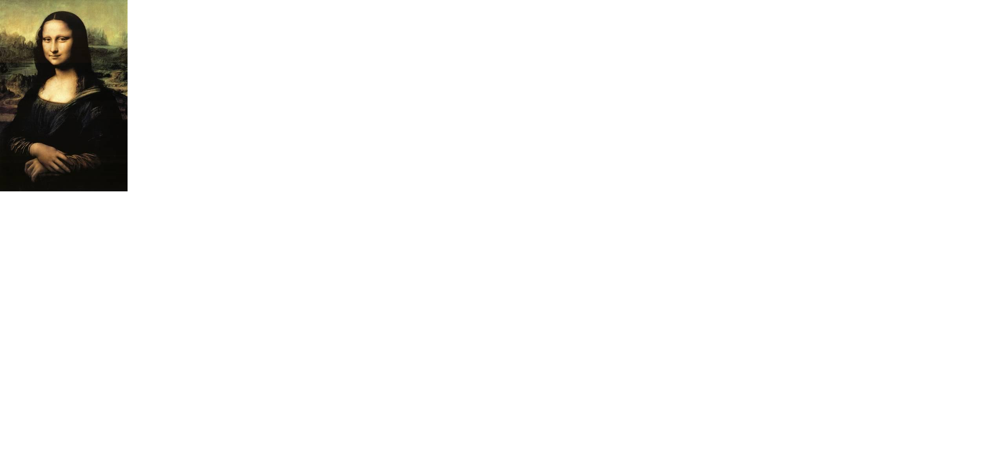

La pintura es una de las formas de arte más antiguas y apreciadas por la humanidad. A través de los colores, las formas y las texturas, los artistas comunican emociones, ideas y visiones del mundo. Desde las cavernas prehistóricas hasta las galerías contemporáneas, la pintura ha acompañado el desarrollo cultural de la sociedad.
Los primeros registros de pintura datan de hace más de 30,000 años, con ejemplos en las cuevas de Lascaux, en Francia. Estas obras muestran la conexión entre el ser humano y su entorno, representando animales, escenas de caza y símbolos rituales.
En el Antiguo Egipto, la pintura tenía un fuerte componente religioso. Los muros de las tumbas y templos estaban cubiertos con imágenes que representaban la vida después de la muerte y las deidades del panteón egipcio.
Durante la Antigua Grecia y Roma, la pintura se utilizó para embellecer los espacios públicos y privados. Los artistas experimentaron con la perspectiva y el realismo, sentando las bases de la pintura occidental.
En la Edad Media, la pintura se centró en temas religiosos, destacando los íconos bizantinos y los frescos de las iglesias góticas. Los colores intensos y la falta de profundidad eran rasgos característicos de la época.
Durante el Renacimiento, artistas como Leonardo da Vinci, Miguel Ángel y Rafael revolucionaron la pintura. Introdujeron el uso de la perspectiva, el estudio anatómico y una nueva forma de representar la luz y la sombra.
En los siglos posteriores, surgieron diferentes movimientos artísticos como el Barroco, el Romanticismo, el Impresionismo y el Cubismo, cada uno aportando nuevas técnicas y visiones del arte.
En el siglo XX, la pintura experimentó una gran transformación. Artistas como Pablo Picasso, Salvador Dalí y Jackson Pollock exploraron nuevos estilos y rompieron con las normas tradicionales del arte.
Actualmente, la pintura sigue evolucionando gracias a las nuevas tecnologías y materiales. Muchos artistas combinan pintura tradicional con herramientas digitales para crear obras únicas.
La pintura contemporánea también refleja temas sociales, políticos y medioambientales, convirtiéndose en un medio de reflexión y crítica cultural.
Existen múltiples técnicas pictóricas, cada una con sus propias características. Desde el óleo y la acuarela hasta el acrílico y el grafiti, cada método ofrece posibilidades distintas para la creatividad.
La pintura no solo embellece el entorno, sino que también funciona como un testimonio histórico y cultural. A través de ella podemos comprender la mentalidad, las emociones y los valores de distintas civilizaciones.
Hoy en día, museos de todo el mundo conservan obras maestras que forman parte del patrimonio universal. Entre ellos destaca el Museo del Prado en Madrid, donde se pueden admirar cuadros de Velázquez, Goya y El Bosco.
La pintura, en sus múltiples formas, sigue siendo una de las expresiones más puras del espíritu humano y una herramienta esencial para la comunicación cultural.